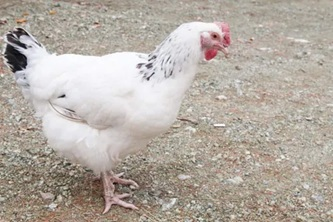
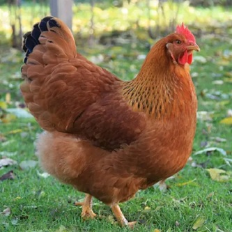

🐓 What Are Dual Purpose Chickens?
Dual purpose chickens are breeds that are useful for both egg production and meat. Unlike lightweight egg-laying breeds such as Leghorns, dual purpose breeds usually have heavier bodies while still laying a respectable number of eggs each year.
For backyard chicken keepers, small homesteads, and families interested in self-sufficiency, dual purpose breeds can be a practical choice because they provide flexibility. They may not lay as many eggs as commercial hybrids, and they may not grow as quickly as meat-specific broilers, but they offer a balanced combination of productivity, hardiness, and usefulness.
The best dual purpose chicken breeds are usually calm, hardy, decent layers, and large enough to be considered useful table birds. Many are also heritage breeds that have been kept by families and farmers for generations.
⭐ Top Dual Purpose Chicken Breeds
If you want a quick recommendation, these are some of the best dual purpose chickens for most backyard flocks and small homesteads.
| Rank | Breed | Why It Stands Out |
|---|---|---|
| 🥇 | Australorp | Excellent egg production, calm temperament, good body size, and beginner friendly. |
| 🥈 | Plymouth Rock | Classic American dual purpose breed with dependable eggs and good meat potential. |
| 🥉 | Rhode Island Red | Hardy, productive, low-maintenance, and useful for both eggs and meat. |
| 4 | Buff Orpington | Large-bodied, gentle, cold hardy, and excellent for family flocks. |
| 5 | Sussex | Friendly, good foragers, productive layers, and useful for homesteads. |
| 6 | Wyandotte | Cold hardy, attractive, calm, and a reliable dual purpose option. |
| 7 | Delaware | Fast-growing heritage breed with good laying ability and meat qualities. |
| 8 | New Hampshire Red | Good growth, decent laying, and strong homestead usefulness. |
📊 Dual Purpose Chicken Scorecard
Dual purpose chickens should not be judged by egg production alone. The table below compares each breed based on egg production, meat usefulness, temperament, hardiness, and overall homestead value.
| Breed | Eggs | Meat Use | Temperament | Hardiness | Dual Purpose Score |
|---|---|---|---|---|---|
| Australorp | ★★★★★ | ★★★★☆ | ★★★★★ | ★★★★★ | 98 / 100 |
| Plymouth Rock | ★★★★☆ | ★★★★★ | ★★★★★ | ★★★★★ | 96 / 100 |
| Rhode Island Red | ★★★★★ | ★★★★☆ | ★★★★☆ | ★★★★★ | 94 / 100 |
| Buff Orpington | ★★★★☆ | ★★★★★ | ★★★★★ | ★★★★★ | 94 / 100 |
| Sussex | ★★★★☆ | ★★★★☆ | ★★★★★ | ★★★★☆ | 91 / 100 |
| Wyandotte | ★★★★☆ | ★★★★☆ | ★★★★☆ | ★★★★★ | 90 / 100 |
| Delaware | ★★★★☆ | ★★★★★ | ★★★★☆ | ★★★★☆ | 89 / 100 |
| New Hampshire Red | ★★★★☆ | ★★★★★ | ★★★★☆ | ★★★★☆ | 88 / 100 |
These scores are intended as a practical comparison for backyard chicken keepers, not a scientific ranking. The best choice depends on your goals, climate, space, and whether you value egg production, meat potential, temperament, or self-sufficiency most.
🥚 Dual Purpose vs Egg-Laying Breeds
Dual purpose breeds are different from high-production egg layers. A Leghorn or ISA Brown may lay more eggs per year, but those birds are generally lighter and less useful as meat birds. Dual purpose breeds usually trade a little egg production for a heavier body, better long-term hardiness, and more overall flexibility.
If your main goal is maximum egg production, visit our Best Chicken Breeds for Eggs guide. If you want easy birds for your first flock, our Best Chickens for Beginners guide may be the better starting point.
🐔 Detailed Dual Purpose Breed Profiles
The breeds below are some of the strongest choices for backyard chicken keepers who want a practical balance of eggs, meat potential, temperament, and hardiness.
🥇 Australorp

| Quick Facts | Details |
|---|---|
| Eggs Per Year | 250–300 |
| Egg Color | Brown |
| Mature Weight | 6–8 lbs |
| Temperament | Calm and friendly |
| Best For | Beginners, families, homesteads |
Australorps are one of the best all-around dual purpose chickens because they combine excellent egg production with good body size and a calm personality. They are easy to manage, cold hardy, and suitable for both beginners and experienced flock owners.
🥈 Plymouth Rock

| Quick Facts | Details |
|---|---|
| Eggs Per Year | 200–280 |
| Egg Color | Brown |
| Mature Weight | 6–8 lbs |
| Temperament | Friendly and dependable |
| Best For | Families and traditional backyard flocks |
Plymouth Rocks are classic dual purpose chickens. They are hardy, friendly, productive, and large enough to be useful for meat. Their steady temperament makes them one of the safest choices for first-time homesteaders.
🥉 Rhode Island Red

| Quick Facts | Details |
|---|---|
| Eggs Per Year | 250–300 |
| Egg Color | Brown |
| Mature Weight | 6–8 lbs |
| Temperament | Confident and hardy |
| Best For | Low-maintenance egg and meat flocks |
Rhode Island Reds are rugged, productive birds that work well in many climates. They are not always as cuddly as Buff Orpingtons, but they are dependable, strong layers and excellent for people who want hardy chickens that do not require much fuss.
🐥 Buff Orpington

| Quick Facts | Details |
|---|---|
| Eggs Per Year | 200–280 |
| Egg Color | Light brown |
| Mature Weight | 7–10 lbs |
| Temperament | Very gentle |
| Best For | Families, children, cold climates |
Buff Orpingtons are large, calm, and friendly birds that make excellent dual purpose chickens for families. Their heavy bodies make them useful as meat birds, while their steady laying and gentle personalities make them enjoyable backyard chickens.
🐓 Sussex

| Quick Facts | Details |
|---|---|
| Eggs Per Year | 200–250 |
| Egg Color | Light brown |
| Mature Weight | 6–9 lbs |
| Temperament | Friendly and curious |
| Best For | Free ranging, families, homesteads |
Sussex chickens are excellent dual purpose birds because they are productive, friendly, and strong foragers. They do well in backyard flocks and are especially useful for people who want chickens that can help reduce feed costs by foraging.
❄️ Wyandotte

| Quick Facts | Details |
|---|---|
| Eggs Per Year | 200–260 |
| Egg Color | Brown |
| Mature Weight | 6–8 lbs |
| Temperament | Calm and independent |
| Best For | Cold climates and attractive flocks |
Wyandottes are hardy, attractive chickens that perform especially well in colder climates. Their heavier bodies, reliable laying, and winter toughness make them a practical choice for backyard keepers who want both beauty and usefulness.
⚪ Delaware

| Quick Facts | Details |
|---|---|
| Eggs Per Year | 200–280 |
| Egg Color | Brown |
| Mature Weight | 6–8.5 lbs |
| Temperament | Curious and active |
| Best For | Homesteads and meat-focused dual purpose flocks |
Delawares were historically valued as meat birds before modern broiler hybrids became dominant. They still make excellent homestead chickens because they grow well, lay a respectable number of eggs, and remain useful as a true dual purpose breed.
🔴 New Hampshire Red

| Quick Facts | Details |
|---|---|
| Eggs Per Year | 200–280 |
| Egg Color | Brown |
| Mature Weight | 6.5–8.5 lbs |
| Temperament | Active and practical |
| Best For | Eggs, meat, and small homesteads |
New Hampshire Reds are closely related to Rhode Island Reds but were developed with faster growth and meat usefulness in mind. They are productive, hardy birds that fit well into small homestead flocks.
🏡 Best Dual Purpose Chickens for Homesteads
For small homesteads, the best dual purpose chickens are birds that lay consistently, forage well, tolerate weather changes, and maintain enough body size to be useful beyond egg production.
| Goal | Recommended Breeds |
|---|---|
| Best overall homestead flock | Australorp, Plymouth Rock, Rhode Island Red |
| Best for cold climates | Wyandotte, Buff Orpington, Plymouth Rock |
| Best for families | Buff Orpington, Australorp, Sussex |
| Best for free ranging | Sussex, Rhode Island Red, New Hampshire Red |
| Best meat potential | Delaware, Buff Orpington, Plymouth Rock |
🌿 Best Dual Purpose Chickens for Free Ranging
If your chickens will spend part of the day foraging, choose breeds that are alert, active, and good at finding some of their own food. Free ranging can help reduce feed costs, but chickens still need a balanced feed, clean water, shelter, and predator protection.
- Sussex
- Rhode Island Red
- New Hampshire Red
- Plymouth Rock
- Australorp
These breeds tend to be practical foragers while still remaining manageable for backyard owners.
📋 Our Recommended First Dual Purpose Flock
For a beginner-friendly dual purpose flock, a good six-hen mix would be:
- 2 Australorps
- 2 Plymouth Rocks
- 2 Buff Orpingtons
This gives you calm birds, good egg production, cold hardiness, and enough body size to represent the true dual purpose category. If you want a more active homestead-style flock, replace one Buff Orpington with a Sussex or Rhode Island Red.
Before choosing your flock size, use the Backyard Chicken Flock Planner and Chicken Coop Size Guide to estimate housing and space needs.
❓ Frequently Asked Questions
What is the best dual purpose chicken breed?
Australorps, Plymouth Rocks, Rhode Island Reds, and Buff Orpingtons are among the best dual purpose chickens because they balance egg production, body size, temperament, and hardiness.
Are dual purpose chickens good for beginners?
Yes. Many dual purpose breeds are excellent for beginners because they are hardy, calm, and useful for both eggs and meat. Australorps, Plymouth Rocks, and Buff Orpingtons are especially beginner friendly.
Do dual purpose chickens lay a lot of eggs?
Most dual purpose chickens lay between 200 and 300 eggs per year, depending on breed, age, season, diet, and living conditions.
Are dual purpose chickens better than broilers?
Dual purpose chickens are more versatile, but they do not grow as quickly as broiler chickens. Broilers are bred mainly for meat, while dual purpose breeds provide both eggs and meat potential.
Which dual purpose chickens are best for cold weather?
Wyandottes, Buff Orpingtons, Plymouth Rocks, Australorps, and Rhode Island Reds are strong choices for colder climates.
Which dual purpose chickens are best for free ranging?
Sussex, Rhode Island Reds, New Hampshire Reds, Plymouth Rocks, and Australorps are good free-range dual purpose breeds.